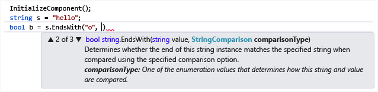

documentation.js.org
Tom MacWright
@tmcw
Mapbox
Hi, I'm Tom. Usually I write cartography software at Mapbox, but
I've been spending a lot of time thinking about documentation,
writing documentation, and creating a system called documentation.js.
documentation.js is an API documentation generator
abstract, narrative
- Blog Posts
- Guides
- Examples
- API Docs
concrete, technical
documentation is a multifaceted problem, and documentation.js
is hitting it from one specific angle: API Docs. this sort of information
lies at the concrete and technical end of the spectrum: while it can
include lots of natural-language instructions, it is structured primarily
from the view of the code.
JSDoc is both code & a standard.
documentation.js uses the standard, not the code.
/**
* Fire event of a given string...
*
* @param {string} type Event type
* @param {Object} [data] Optional data...
* @returns {Object} `this`
*/
fire: function(type, data) {
 API documentation is a reference
manual for software: it's concerned with definition as much as explanation.
API documentation is a reference
manual for software: it's concerned with definition as much as explanation.
API doc generators have fallen out of favor.
Lots of APIs are documented manually in Markdown.
- JSDoc is verbose
- Code is documentation
- JavaScript is ineffable
- Requirements are bad
There are lots of alternative views here: many prominent
library authors will only write manual documentation, and a lot of people
only write examples, or sometimes no docmentation at all. Documentation is
as much a cultural issue as a technical one.
JavaScript is changing, and so are we.
It's time for the second coming of documentation generators.
But there's a lot that
informed my decision to pour lots of time into documentation.js, both
in terms of personal experience and also the changing way how
the JavaScript community thinks.
Why documentation.js now
- ASTs
- Type systems
- Small modules (ES6!)
why i work on documentation.js
nobody else loves documentation generation, so why not me
why i work on documentation.js
refreshingly nonspecific to anything at all
why i work on documentation.js
ASTs are so cool
❤ AST
I'll put it right out there:
the rise of Abstract Syntax Trees and good parsers for JavaScript is the
single coolest thing I've seen in the last year.
AST
a hackable representation of parsed JS
AST
the middle step for babel
JavaScript parsing, transforming, analyzing, and writing itself
Why is this cool?
/**
* Multiply a number by two
*
* @name timesTwo
* @type function
* @memberof MyClass
* @param {number} input a number
* @returns {number} times two
*/Here's some verbose JSDoc
documentation. It's a lot to write, right?
But in a lot of ways, it's reiterating what
the code already says. Here's the code that goes
under it.
*...
*/
MyClass.timesTwo = function(a) {
return a * 2;
};
{"type":"Program","body":[{"type":"ExpressionStatement","expression":{"type":"AssignmentExpression","operator":"="...
Let's delete some code
{
"type": "MemberExpression",
"object": {
"type": "Identifier",
"name": "MyClass"
},
"property": {
"type": "Identifier",
"name": "timesTwo"
}
}
/**
* Multiply a number by two
*
* @name timesTwo
* @type function
* @memberof MyClass
* @param {number} input a number
* @returns {number} times two
*/
/**
* Multiply a number by two
*
* @name timesTwo
* @type function
* @param {number} input a number
* @returns {number} times two
*/
...
"property": {
"type": "Identifier",
"name": "timesTwo"
}
},
"right": {
"type": "FunctionExpression",
/**
* Multiply a number by two
*
* @name timesTwo
* @type function
* @param {number} input a number
* @returns {number} times two
*/
/**
* Multiply a number by two
*
* @param {number} input a number
* @returns {number} times two
*/
Let's keep going:
Type systems!
*...
*/
MyClass.timesTwo = function(a) {
return a * 2;
};
*...
*/
function(a: number): number {
[{
"type": "Identifier",
"name": "a",
"typeAnnotation": {
"type": "TypeAnnotation",
"typeAnnotation": {
"type": "NumberTypeAnnotation"
}
}
}]
/**
* Multiply a number by two
*
* @param {number} input a number
* @returns {number} times two
*/
/**
* Multiply a number by two
*
* @param input a number
* @returns times two
*/
/**
* Multiply a number by two
*/
Type systems
and documentation taste great togetherAnd note that,
no matter how much you use its flexibility in regards to types,
JavaScript still has them, and they matter. Polymorphic
methods perform differently, and type coercion is really
only sometimes the intent of someone who provides a string
where you need a number.
Type systems mean JS is less ineffable
ASTs mean that JS understands itself
(PSA: other languages are better at this, and JS is a rough starting
spot. Read Mary Rose Cook & David Nolen on lisp!)
VERBOSITY REDUCED
Plus! documentation.js transforms its output into a
Markdown AST and turns that into Markdown with
mdast!
function propertySection(comment) {
return !!comment.properties && [
u('strong', [u('text', 'Properties')])..
JavaScript to documentation.js to Markdown with
no dreaded string concatenation!
Shoutout to Babel.js, and Acorn, Esprima, Espree, mdast, Doctrine: all
A+ projects that are moving JS forward.
Moving on: modules
Code is modular, documentation isn't.
DIY "write some stuff in the README" approach becomes more tiresome
the more you depend on modules.
Real talk: I always read the code.
Embedded documentation could be the way forward.
With ES6 modules, when you type
import foo; foo.bar()
we finally
know what code you're using.
what if

I'm as much a vim dork as anyone since 1980 or whenever but Intellisense
is still kind of like a distant glint of light in another dimension saying
'what if writing code was not basically just writing text'. It's by no means
as magic as visual coding or really trendy at all, but you really have
to think about how many times you flip from your text editor to a README
on GitHub in Chrome, and think about what could be.
documentation.js is getting there: it crawls dependency
trees, just like browserify or webpack, and can document 'modular frameworks'
for instance: turfjs
a GIS framework made up of 50+ modules that provide
1 function each
50 modules
✈
all docs in one place
50 modules
✈
all docs in one place without writing all of them in one place!
standardized docs are good for modularity:
we can combine docs from different projects!
BONUS: autogenerating command-line interfaces from documentation: see turf-cli
Unfinished business
How does documentation culture work?
- Network effects of everything-documented
- Expectation of documentation
How do we make documentation
authoring wonderful?
- Live-reloading rebuilding docs
- Great tools for linting
- Guides for how to write
- Robustness
There is much to do. But it's already pretty good
(thanks to John Firebaugh, Anand Thakker, Beau Gundersen, and other
A++ people)
$ npm install -g documentation
$ documentation index.js -f md
fin!
Tom MacWright
@tmcw
Mapbox